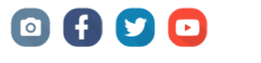
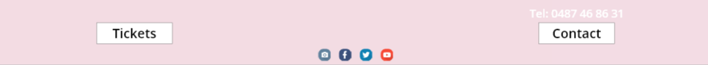
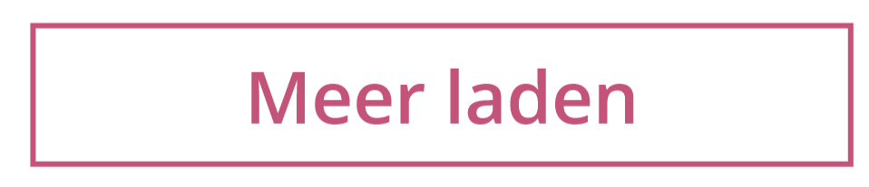
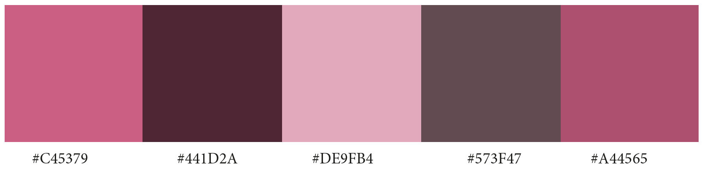

De titel bestaat uit de kleur hex: #C45379 en heeft de grootte van 60pt.
Dit zijn de gebruikte knoppen voor de snelkoppelingen naar de sociale media.
Dit is de terugkomende opmaak die ik gebruikte voor de footer
Dit is de vaste opmaak voor de knoppen naar andere pagina's buiten de linken in de navaigatie.
Dit is het gebruikte kleurenpalet.